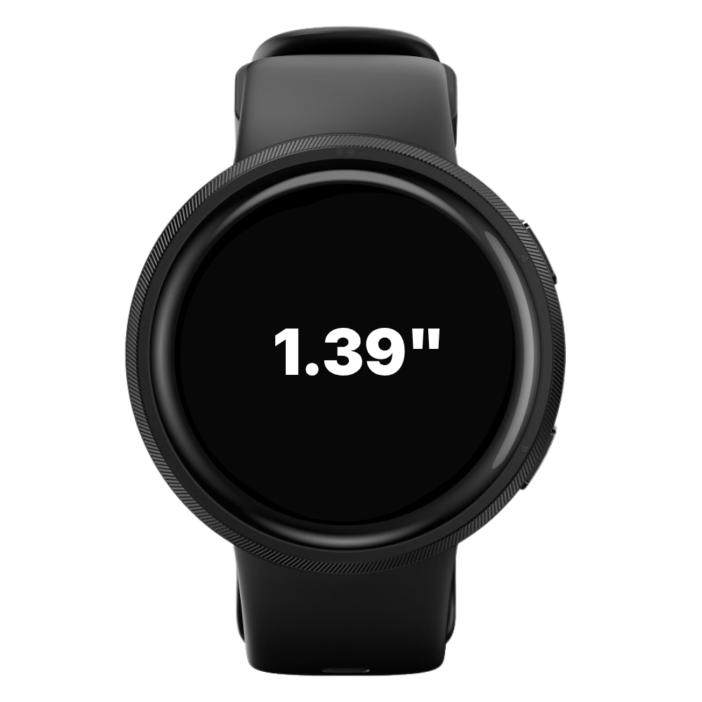
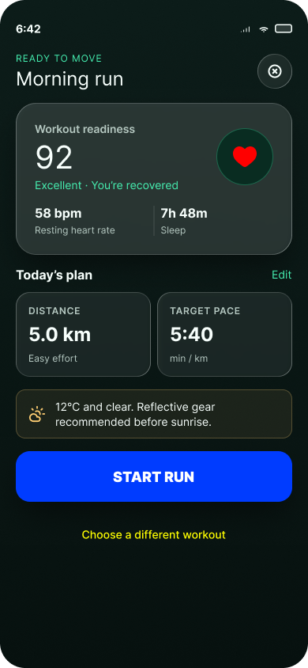

Project lead(s)
In order to understand the project goals, and timeline.
A Product design exercise
Thank you for the opportunity to show my design skills and thinking!
01
to effectively deliver on my tasks. I would likely have conversations with:
In order to understand the project goals, and timeline.
To explore what’s possible from a user experience perspective in relation to the types of devices, their technical features, and advantages in order to provide a design solution that elevates the user’s interaction with the hardware.
To discuss what the target users value most in their experience with the product(s), what are their expectations, what are some of the competitors, and what is the market positioning of each product.
I’d love to learn how they approach the design system, user interactions, colours, typography and most importantly, any user personas or similar, that help shape design decisions and output.
02
For this exercise, I started by reading the brief several times to fully grasp what is expected of me, and the deliverables. I looked through Vitalist.co and I noticed a link to Reebok smartwatches. Glancing over the watch designs, and features on connect.reebok.com/smartwatches. The Reebok Rush stood out as the one with the smallest screen size at 1.39”, seemed fitting based on the exercise requirements to design for the watch with the smallest display. So I chose it for my prototype.
Then I conducted a quick manual and ai-assisted desk-research to understand the target audience who would purchase a sub 200 dollar smartwatch for running +/-5km. Based on that research, I built 3 user personas. My aim with building the user personas was to justify the design decisions and meet the requirements of different users. In the age of ai, a certain level of personalization may be expected from the user. Thus, building personas can help give each user, a personalized and personable experience.

03
The brief asked for the following metrics during the 5km running session:
04
Horizontal swipe is a familiar smartwatch interaction that I used in this prototype. Please note, for simplicity, I implemented a swipe-left gesture to navigate the Figma prototypes.

05
During an exercise session, users are likely dealing with external forces such as indoor or outdoor temperatures, crowded public spaces, weather conditions such as humidity, heat, rain or snow. Perhaps discomfort due to exercise efforts, terrain and/or gear. Further, there’s likely hand and body motions which impacts their ability to see text on a digital small scree, clearly at a glance. In the age of ai, a certain level of personalization may be expected from the user. Thus, building personas can help give each user, a personalized and personable experience.
Retired HR worker
Recently joined a seniors’ running club as a social activity. The group meets once a week.
Open Chris’s prototype in FigmaChain restaurant manager
Would rather watch motorsport on TV, but is trying to run three times a week to help manage cholesterol, as their doctor recommended.
Open Sam’s prototype in FigmaLogistics coordinator
Casually runs to help relieve work-related stress and prevent burnout.
Open Jordan’s prototype in Figma06
I used Figma’s AI to quickly generate the following smartphone screen, then manually adjusted it to my liking. The watch designs, most of the animations, and all of the interactions were built by me, to show my Figma skills.

07
Thank you again. I am happy to discuss this exercise, and answer any related questions.